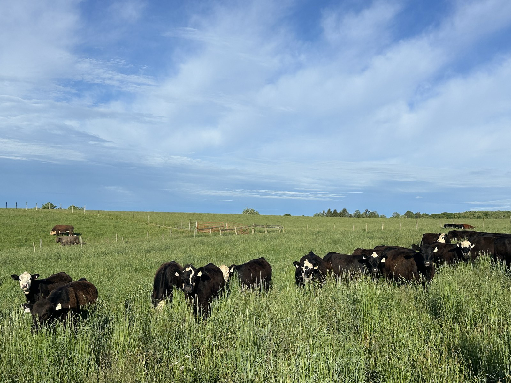

West Virginia University · USDA NRCS
Design a diverse, resilient pasture — matched to your land.
Answer a few questions about your ground, your goals, and how you'll seed it. The planner builds a research-based mix of grasses, legumes, and forbs likely to establish and thrive on your pasture — with a seed-buying table, a step-by-step establishment plan, and sources for every recommendation.